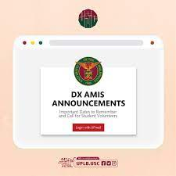

Identifying the Need for Improvement:
The first step in any improvement process is recognizing existing challenges. My school's enrollment system was manual, time-consuming, and prone to errors. Long queues during enrollment periods and the manual handling of paperwork led to inefficiencies that affected both students and staff. Recognizing these issues motivated me to embark on the journey of programming to streamline the system.
Learning the Ropes of Programming:
Armed with determination, I delved into the world of programming. Learning languages such as Python, Java, and SQL became the foundation of my journey. Online courses, tutorials, and hands-on projects allowed me to grasp the concepts and skills necessary to develop a robust and efficient enrollment system.
=